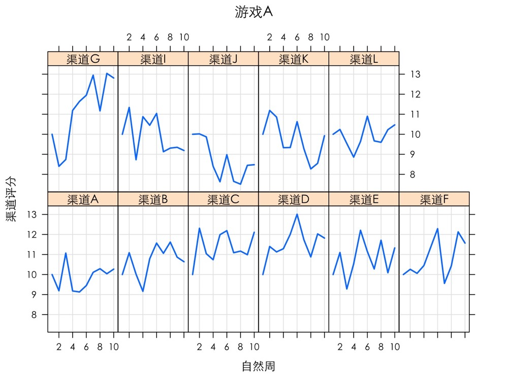
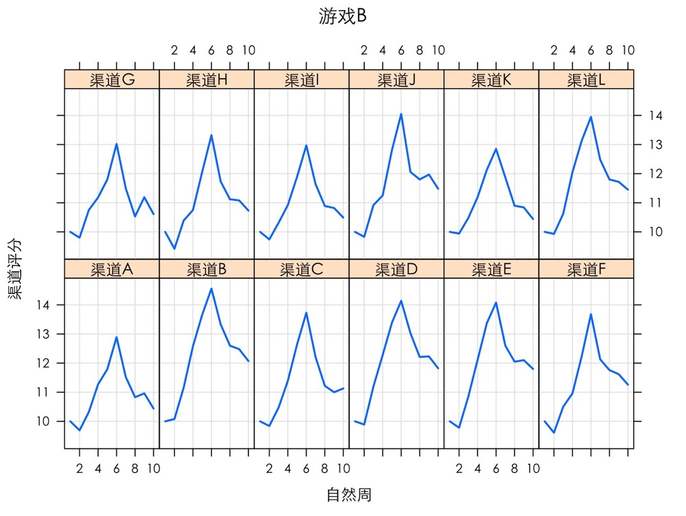
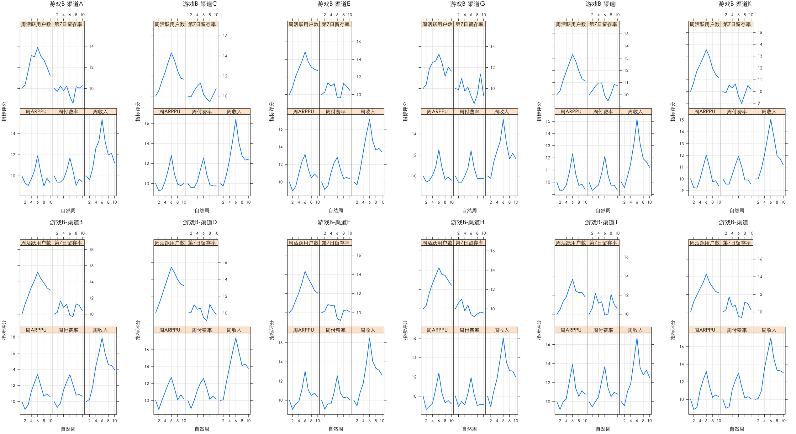
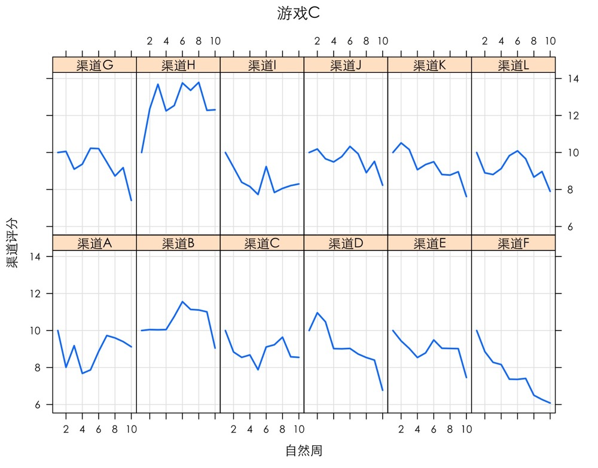

渠道分析—用户质量评级
在渠道分析中，若单独查看各渠道的关键指标，不能很好的体现渠道的整体质量，也不容易进行不同游戏在某一渠道的横向对比。因此，需要根据业务需求，使用一些关键指标，构建通用的渠道用户评价体系，对渠道质量进行综合打分评级。
渠道用户评价体系
构建渠道用户评价体系的目的是在短期内根据业务模型综合判断渠道用户的质量，该体系需要同时满足一定的效度、信度以及普适性的要求。
- 效度：能够准确代表渠道品质。
- 信度：在不同的阶段和时间内保持稳定，可以排除干扰因素的影响。
- 普适性：对于不同游戏如ARPG，SLG、休闲益智类等采用同一算法都可以适用。
渠道用户质量评分模型
渠道用户质量评分模型应根据业务模型需求设计评分规则，以满足渠道用户评价体系的效度和信度要求。
以自然周为研究周期，选取不同游戏的周收入、周活跃、周ARPPU、周付费渗透率、第7日留存率作为基础指标，分别对这些指标进行评分，然后将各指标评分的得分乘以根据业务需求所设置的权重后再进行求和，得出各个渠道最后的用户质量评分的总分。评分规则如下：
- 选取某一自然周作为起始周，使全部渠道都处于同一评分周期内，且所有渠道初始评分都是10分。
- 波动性得分 = 5 * (本周实际值 - 上周实际值)/最近四周的最大值
- 量级得分 = 5 * 渠道本周值 / 所有渠道本周总值（只有周收入、周活跃有量级指标， 其它三个指标不考虑量级评分）。
- 各指标本周得分 = 上周得分 + 波动得分 + 量级得分
- 渠道本周得分 = A指标本周得分 * A指标权重 + B指标本周得分 * B指标权重 …
- 统计期内的渠道得分 = 第1周渠道得分 + 第2周渠道得分 + … + 统计期内最后一周渠道得分
以波动性得分来衡量指标效度，考虑到不同游戏在不同时期的用户质量会有所不同，所以选用最近四周的最大值作为分母；对于周收入和周活跃指标需要消除量级的影响，因此，以渠道自身值/所有渠道本周总值得到量级得分。
渠道用户质量评分
读取渠道用户数据，并查看数据
1 | rawdata <- read.csv('渠道用户数据.csv') |
| 游戏名称 | 渠道名称 | 自然周 | 周收入 | 周活跃用户数 | 第7日留存率 | 周付费率 | 周ARPPU | |
|---|---|---|---|---|---|---|---|---|
| 1 | 游戏C | 渠道A | 第1周 | 311 | 989 | 0.114 | 0.024 | 0.315 |
| 2 | 游戏A | 渠道A | 第1周 | 814 | 740 | 0.149 | 0.012 | 1.100 |
| 3 | 游戏B | 渠道A | 第1周 | 37040 | 85714 | 0.105 | 0.017 | 0.432 |
| 4 | 游戏F | 渠道A | 第1周 | 21592 | 66074 | 0.059 | 0.015 | 0.327 |
| 5 | 游戏E | 渠道A | 第1周 | 64420 | 46371 | 0.094 | 0.055 | 1.389 |
| 6 | 游戏D | 渠道A | 第1周 | 27211 | 20316 | 0.073 | 0.041 | 1.339 |
查看数据类型明细
1 | str(rawdata) |
1 | 'data.frame': 830 obs. of 8 variables: |
查看游戏名称
1 | > unique(rawdata$游戏名称) |
载入评分规则的计算方法，并将“自然周”列的因子改为有序水平因子
1 | # 载入实现评分方法的函数 |
不同游戏的渠道用户质量评分
对游戏A、游戏B、游戏C进行渠道用户质量评分
- 游戏A的各渠道评分
1 | AnalysisChannel(rawdata, "游戏A") |

渠道G从第2周开始，渠道用户评分一直呈现增长趋势，在第10周得分达到13分，属于表现优异的渠道；渠道J和渠道K用户评分整体下滑明显。
- 游戏B的各渠道评分
1 | AnalysisChannel(rawdata, "游戏B") |

所有渠道在第2周到第6周的时间段内，各个渠道用户评分快速增加，都在第6周达到最高评分，第6周过后，渠道用户评分开始迅速下降。查看各渠道的指标评分变化情况，试图分析引起下降的指标情况。
1 | # 查看各渠道的指标评分变化情况 |

所有渠道的指标评分在第6周迅速下降，导致各渠道总体评分也迅速下降。在第8周时，7日留存率评分明显上升，其它指标评分依旧下降。这可能说明，该款游戏可能在第2周到第6周开启了某种促销活动，使得在这期间各指标评分迅速上升，当活动结束后，只有7日留存率指标评分呈现波动趋势，而其它指标评分呈现下降趋势。
- 游戏C的各渠道评分
1 | AnalysisChannel(rawdata, "游戏C") |

渠道H从第1周到第3周，渠道用户评分一直呈现增长趋势，之后评分一直在12～14之间波动，属于表现优异的渠道；渠道D、渠道E、渠道F、渠道G、渠道J、渠道K用户评分整体下滑明显。